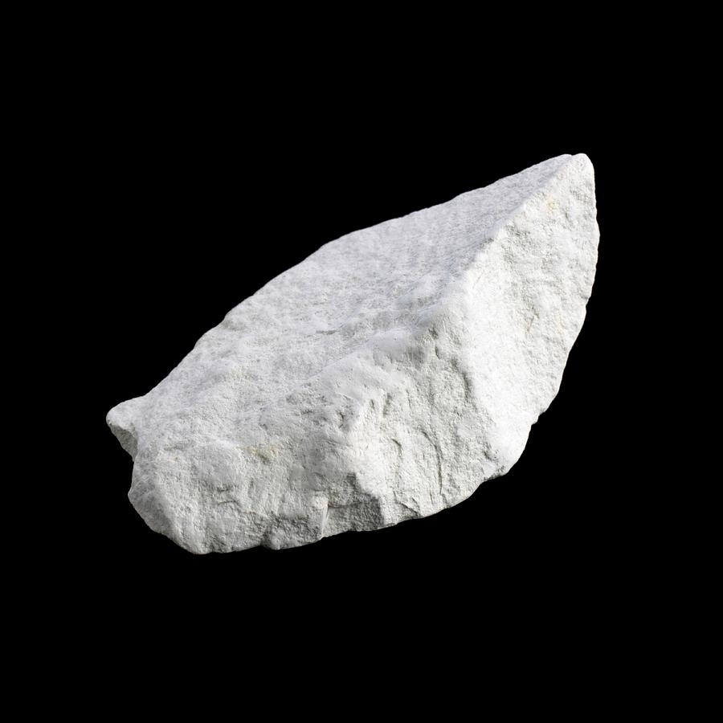
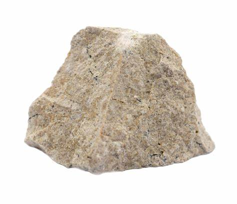
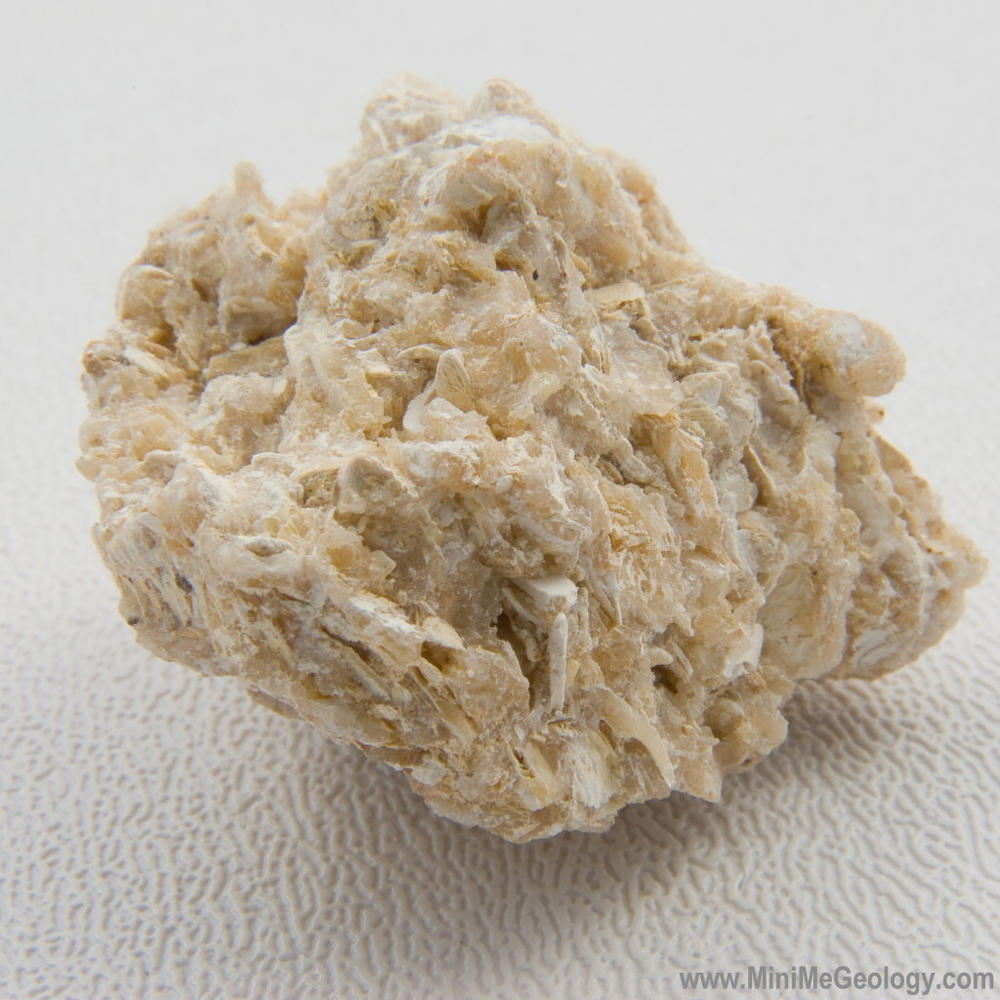
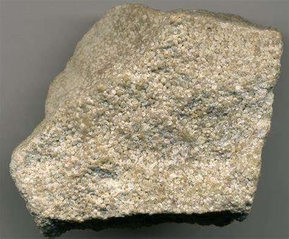
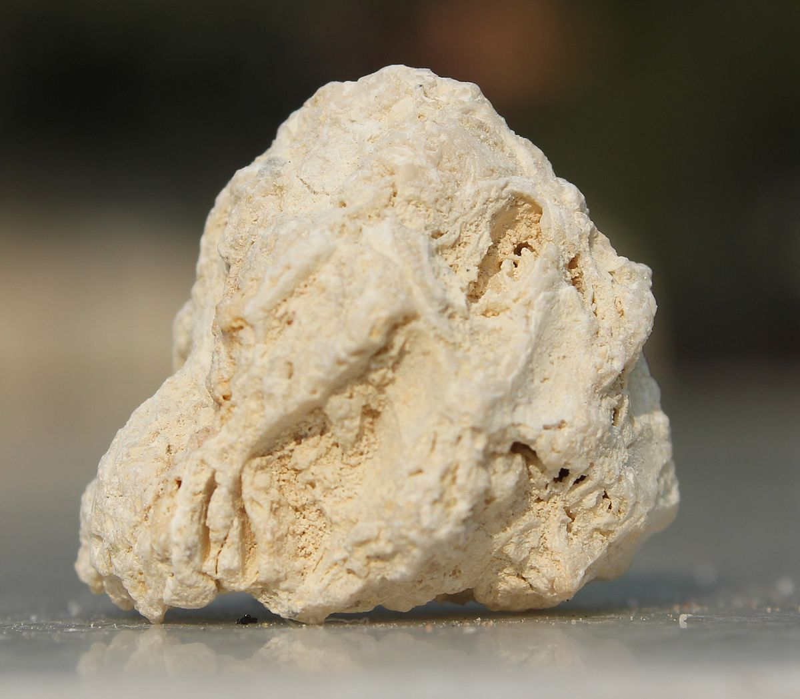
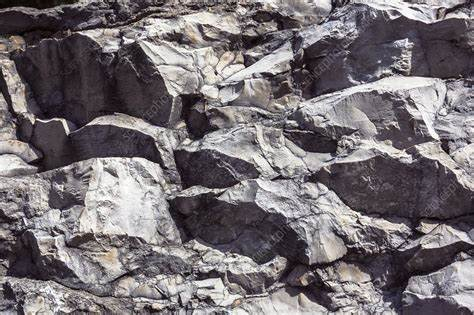
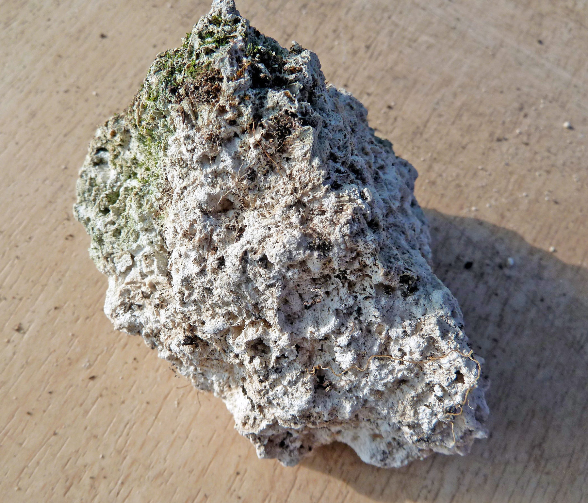
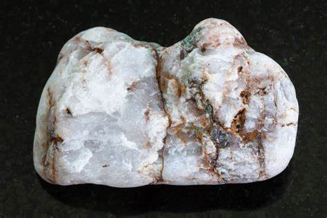

Limestone: The Essential Sedimentary Rock
Chemical Formula: Primarily CaCO₃ (Calcium Carbonate)
Color: Various (White, Grey, Beige, Yellow, Brown)
Hardness: 3-4 on the Mohs scale
Crystal System: Sedimentary
Localities: Found worldwide; notable regions include the United States, France, India, Egypt, and the United Kingdom
Common Uses: Building material, aggregate in concrete, lime production, sculptures, and soil treatment
Limestone is a sedimentary rock composed primarily of calcium carbonate (CaCO₃), usually in the form of the mineral calcite. It forms in marine environments where the accumulation of shell, coral, and algal debris takes place. Over time, these materials compress and cement into limestone. This rock is crucial for a variety of industrial and architectural applications, from the construction of buildings to the production of cement and lime.
Limestone has been used since ancient times, particularly in architecture and sculpture. Famous structures like the Great Pyramids of Giza and the Parthenon were built using limestone, attesting to its durability and widespread availability.
Formation and Types of Limestone
Limestone forms over millions of years, primarily in shallow marine environments. Calcium carbonate accumulates as marine organisms like coral, foraminifera, and mollusks die, and their shells and skeletons settle on the ocean floor. Over time, these deposits are compacted and lithified into solid rock.
1. Chalk
A soft, white, porous form of limestone made from microscopic marine organisms. Chalk is often used in agriculture and art.
2. Travertine
A banded, often beautiful form of limestone that forms around hot springs. Travertine is popular in architecture and for flooring.
3. Coquina
A loosely cemented limestone made from shells and coral debris. Coquina has a distinct texture and is often found in coastal regions.
4. Oolitic Limestone
Composed of small rounded grains called ooids, this limestone forms in warm, shallow marine waters and is often used in construction.
5. Fossiliferous Limestone
This variety contains visible fossils of marine organisms and serves as both a building material and a window into ancient marine ecosystems.
Structure and Properties of Limestone
Limestone is a relatively soft rock compared to others like granite or basalt, but it is still widely used due to its versatility and ease of shaping. Its primary mineral, calcite, gives it several unique properties.
- Hardness: Limestone’s hardness ranges from 3 to 4 on the Mohs scale, making it easy to carve but prone to weathering.
- Color: Limestone comes in a wide variety of colors, from pure white to beige, grey, and even brown, depending on its impurities.
- Porosity: Some types of limestone, especially coquina and travertine, are highly porous, while others like oolitic limestone are more compact.
- Fossil Content: Many limestones contain fossils, offering insight into ancient marine life. Fossiliferous limestone is often prized for decorative purposes.
Uses of Limestone
Limestone's utility spans multiple industries due to its abundance, workability, and chemical properties. Its uses range from construction to art and agriculture.
1. Construction Material
Limestone has been a building material for millennia, valued for its ease of cutting, durability, and availability.
- Historical and Modern Structures:
- The Great Pyramids of Giza in Egypt were constructed using massive blocks of limestone.
- The Parthenon in Athens, Greece, showcases the durability and beauty of limestone in ancient architecture.
- Modern buildings often use limestone in facades, flooring, and interior designs.
- Concrete and Aggregate: Limestone is an essential component in cement production and is commonly crushed and used as aggregate in concrete, contributing to the strength of roads, bridges, and buildings.
2. Lime Production
Heating limestone produces lime (CaO), which has a wide variety of industrial uses, including steel production, environmental remediation, and as a soil conditioner in agriculture.
- Quicklime and Hydrated Lime: Quicklime is produced by heating limestone at high temperatures. When water is added, it becomes hydrated lime, which is used in plaster, mortar, and chemical manufacturing.
3. Sculpture and Decorative Use
Artists have used limestone for centuries to create sculptures and decorative items. Its relative softness allows for intricate carving, while its color variations add aesthetic appeal.
- Famous Examples:
- Michelangelo’s David was carved from a block of limestone.
- Many Gothic cathedrals in Europe feature intricate limestone carvings in their facades and interiors.
4. Soil Treatment and pH Control
Limestone is often ground into a fine powder and used as a soil amendment in agriculture. Known as agricultural lime, it neutralizes acidic soils, improving crop yields.
Environmental Remediation: Crushed limestone is used in water treatment plants to remove impurities and in coal plants to reduce sulfur dioxide emissions.
Unusual Varieties of Limestone
Certain types of limestone exhibit unique properties or contain rare mineral inclusions, making them valuable for specific applications or decorative purposes.
1. Lithographic Limestone
This very fine-grained limestone is used in the printing process known as lithography. Its smooth surface allows for high-precision image transfer.
2. Tufa
Tufa is a porous limestone that forms near freshwater bodies. Its lightweight and ability to hold moisture make it useful in garden design and aquascaping.
3. Marble
While not technically limestone, marble forms from limestone subjected to extreme heat and pressure, transforming it into a harder, crystalline rock. Marble is prized for sculpture and architectural use.
Sourcing Locations of Limestone
Limestone is one of the most widely distributed rocks, found on every continent. Some regions are particularly known for their high-quality limestone quarries.
- United States: Indiana and Texas are major sources of limestone, widely used in construction and for producing cement.
- France: The famous Lascaux Caves are situated in limestone cliffs, and French limestone has been used in monuments such as the Notre Dame Cathedral.
- Egypt: Limestone quarries provided the material for the Pyramids of Giza, some of the most iconic limestone structures in history.
- United Kingdom: The Cotswold region is known for its yellow limestone, used in traditional British cottages and buildings.
- India: Rajasthan is a key source of high-quality limestone, particularly for use in construction and as decorative stone.
Exploration and Mining of Limestone
Limestone is extracted through quarrying, often in open-pit operations. Exploration focuses on locating high-purity deposits suitable for industrial use or construction.
Exploration
Geological surveys, drilling, and sampling help identify high-purity limestone deposits. Remote sensing and ground-penetrating radar can also be used to detect deeper reserves.
Mining Methods
Limestone is typically quarried using open-pit methods. Large blocks are cut from the quarry face using wire saws, explosives, or diamond-tipped cutting tools. After extraction, limestone blocks are processed into slabs, crushed for aggregate, or ground into powder for industrial use.
Processing
Limestone is cut, crushed, or ground depending on its end use. Slabs are polished for decorative purposes, while crushed limestone is used in construction or agricultural applications. Lime production involves heating limestone to produce quicklime and hydrated lime.
Metaphysical Properties of Limestone
Limestone has symbolic significance in various cultures and is believed to hold metaphysical properties.
- Grounding and Stability: Limestone is thought to provide grounding energy, connecting individuals to the earth and fostering stability in times of change.
- Memory and Healing: Some believe limestone helps with memory retention and can assist in emotional healing by promoting calm and balance.
- Nurturing Energy: As a sedimentary rock formed from ancient marine life, limestone is associated with nurturing and promoting growth, both physically and spiritually.
Famous Finds and Limestone
Limestone has been used in many iconic monuments and natural landmarks throughout history.
- Great Pyramids of Giza (Egypt): Constructed using massive blocks of limestone, the Pyramids are one of the most famous and enduring limestone structures.
- Mammoth Cave (USA): The world’s longest cave system, located in Kentucky, was formed in limestone and features stunning underground formations.
- Stone Forest (China): This natural karst landscape in Yunnan Province showcases towering limestone pillars shaped by centuries of erosion.
- Château de Chambord (France): This Renaissance castle is built from French limestone, showcasing the stone's versatility in historical architecture.
Caring for Limestone
Limestone requires careful maintenance, particularly in outdoor applications where it is exposed to weathering.
- Cleaning: Limestone surfaces should be cleaned using a soft cloth and pH-neutral cleaner. Avoid using acidic or abrasive cleaners, as these can erode the stone’s surface.
- Sealing: Applying a sealant can protect limestone from moisture, stains, and acid rain, particularly in outdoor structures.
- Handling: Limestone is relatively soft, so care should be taken to avoid chipping or scratching when moving or installing slabs.
Conclusion
Limestone is one of the most important and versatile materials in human history. From its use in ancient architecture to modern construction, limestone’s durability, workability, and aesthetic appeal make it an essential resource across many industries. Whether as a building material, a soil conditioner, or a medium for artistic expression, limestone continues to shape landscapes and cultures around the world.
See Also
- Related Rocks: Travertine, Marble, Chalk
- Relevant Topics: Limestone Mining, Historical Uses of Limestone, Industrial Applications of Limestone